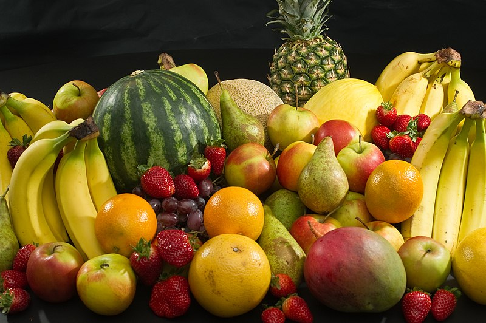
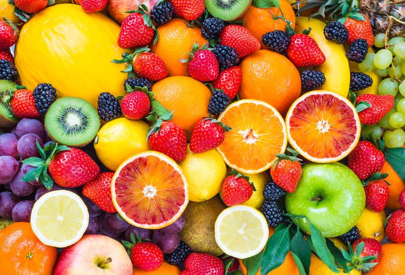
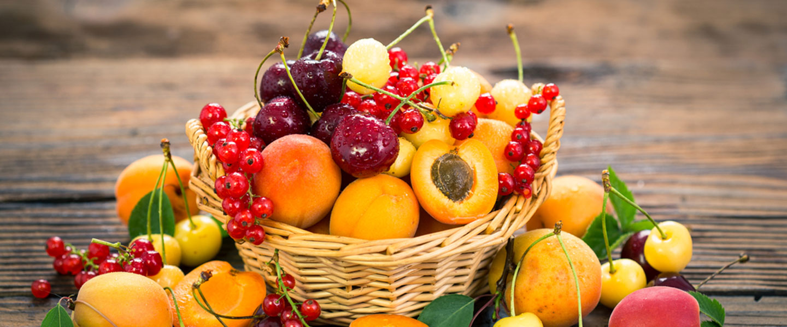
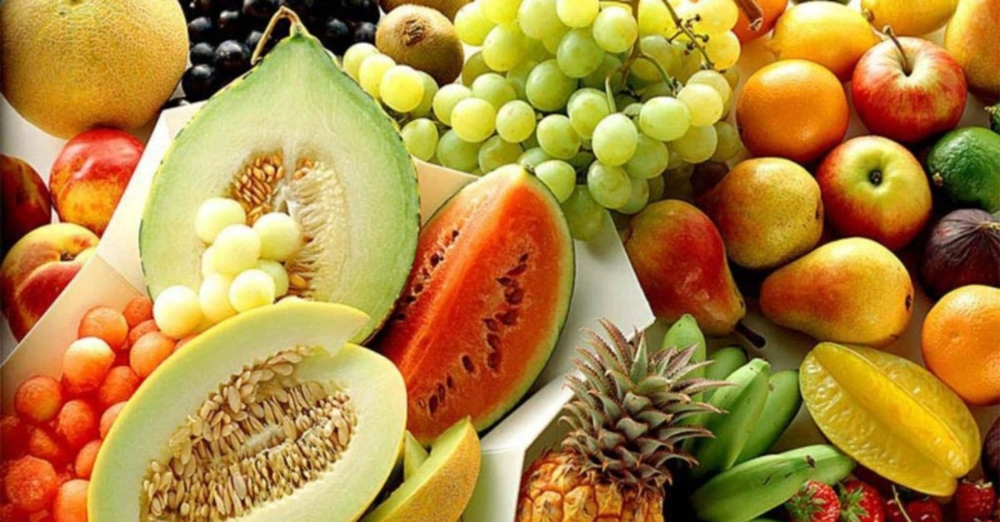
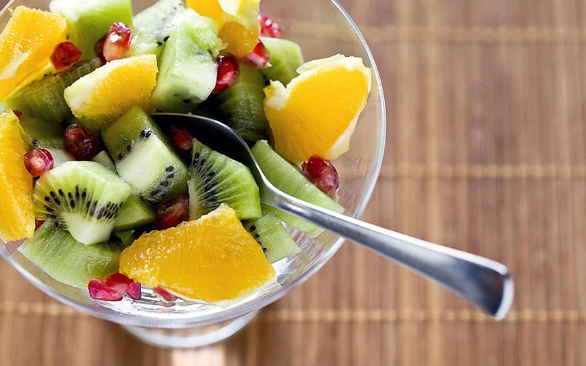
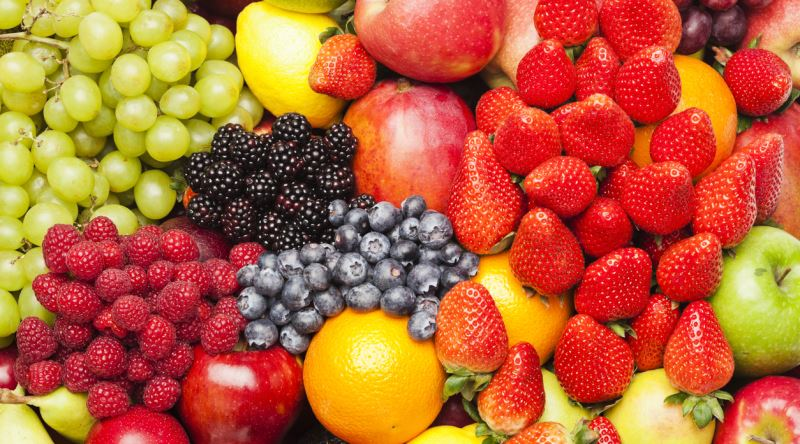
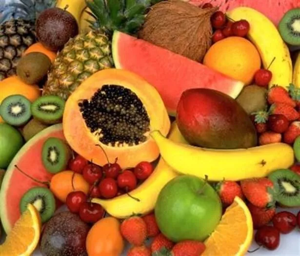

Doğanın bizlere verdiği en değerli hediyelerden olan meyveler, rengarenk görüntüsü, lezzetli tadının yanında aynı zamanda sağlığımız için de oldukça yararlı. Olmazsa olmaz besin maddelerinden olan meyvelerin vücudumuza sağladığı katkılar sayesinde çeşitli hastalıklardan kurtuluyor, daha sağlıklı ve enerjik bir yapıya sahip olabiliyoruz. Özellikle mevsiminde tüketilen meyveler ise çok daha farklı. İşte meyvelerin vücudumuza faydaları
KOLESTROLÜN DÜŞMANI

Her yaşta ortaya çıkabilen, ancak ilerleyen yaşlarda daha da ciddi bir sorun haline gelen kolesterol, kalp sağlığının en büyük tehdit unsurlarından biri. Kolesterolü kontrol altına almak ve düşürmek içinse meyve tüketmek gerekiyor. Elma, kiraz, armut, kivi gibi meyveler, C ve E vitaminine sahip olmalarının yanı sıra folik asit de içerdikleri için kolesterolü dengede tutuyor.
KAS VE EKLEM GELİŞİMİ

Özellikle küçük yaşlardan itibaren meyve yeme alışkanlığına sahip olmanız durumunda kas ve eklem yapısının sağlam ve gelişmiş olduğu gözlemlenebiliyor. Portakal, dut, erik, üzüm, şeftali ve kayısı başta olmak üzere elma ve incir gibi meyveler, C, B, E ve K vitaminleri bakımından zengin olduğu için büyümeyi hızlandırıyor.
DİŞ ÇÜRÜMESİNİ ENGELLER
Kiraz, çilek ve karadut gibi kırmızı meyveler, kalsiyum ve fosfor bakımından zengin olduğu için diş çürümesini engelliyor ve dişlerin daha sağlıklı gelişmesini sağlıyor.
BAĞIRSAKLAağırsakları Düzenli Çalıştırır
Kayısı, erik ve şeftali gibi meyveler, A ve C vitamini bakımından son derece zengin. Bu da bağırsakların düzenli ve sağlıklı sindirim yapmasına katkıda bulunuyor.
BAĞIŞIKLIK SİSTEMİ GELİŞİYOR

Üzüm, hindiba ve ananas gibi meyveler, posa, kalsiyum, potasyum ve folik asit bakımından zengin oldukları için hastalıklara karşı savunma sistemimizi geliştiriyor.
İDRAR YOLLARI ENFEKSİYONUNA KARŞI
Karpuz, muz, vişne nar gibi meyveler, flovonaid içerdikleri için idrar yolları hastalıklarının oluşma riskini ciddi anlamda azaltıyor.
HÜCRELERİ YENİLER

Ölü hücrelerin atılması ve yaşlanmanın geciktirilmesi için mandalina ve greyfurt bol miktarda tüketilmeli.
ALERJİLERE KARŞI KORUMA

Kivi ve çilek, C vitamini deposu oldukları için güçlü antioksidanlardır ve bu nedenle alerjilere karşı tam koruma sağlar.
DİYABET VE KİREÇLENMEYİ ENGELLER

Kavun ve armut gibi meyveler, diyabet başta olmak üzere kireçlenme ve damar tıkanıklığına karşı birebirdir.
KANSIZLIĞA KARŞI MEYVE YİYİN

Kayısı, incir ve ananas cilt yenilenmesinde kansızlığın giderilmesinde son derece etkili olan meyvelerdir.